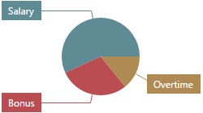
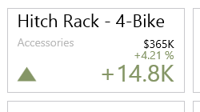
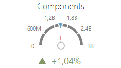
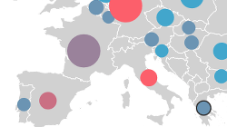
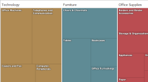
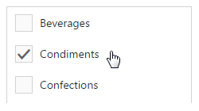

Data Presentation Basics
The Web Dashboard can be used to present dashboards on the web. A wide range of dashboard items are used to display visual or textual information.
| Dashboard Item | Image | Description |
|---|---|---|
| Chart |  |
Displays data graphically using bars, lines, points, etc. |
| Scatter Chart |  |
Visualizes relationships between numeric variables. |
| Grid |  |
Presents data in tabular form. |
| Pies |  | Displays a series of pies or donuts that represent the contribution of each value to the total. |
| Cards |  | Displays a series of cards, each illustrating the difference between two values. |
| Gauges |  | Visualizes data within a series of gauges. |
| Pivot |  |
Displays cross-tabular reports and allows you to analyze multi-dimensional data. |
| Choropleth Map |  |
Colorizes areas in proportion to the provided values. |
| Geo Point Map |  |
Displays callouts on the map using geographical coordinates. |
| Bubble Map |  | Displays bubbles on the map using geographical coordinates. |
| Pie Map |  |
Places pies on the map using geographical coordinates. |
| Range Filter |  |
Allows you to apply filtering by dragging selection thumbs along the argument axis. |
| Images |  |
Displays images. |
| Text Box |  |
Displays rich text within a dashboard. |
| Treemap |  | Visualizes data in nested rectangles. |
| Combo Box |  |
Allows you to select a value(s) from the drop-down list. |
| List Box |  | Allows you to select a value(s) from the list. |
| Tree View |  |
Displays values in a hierarchical way and allows you to filter other dashboard items by selecting parent/child values. |
The Web Dashboard enables interaction between various dashboard items. These features include Master Filtering and Drill-Down.
To learn more about the dashboard layout, see the Dashboard Layout topic.